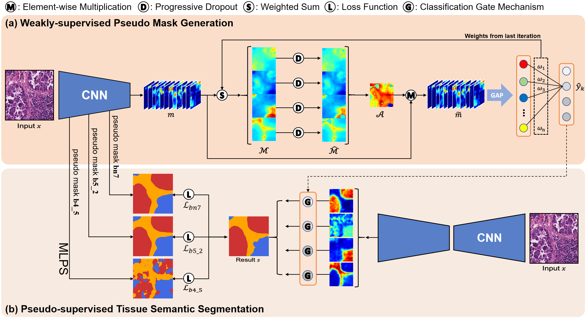
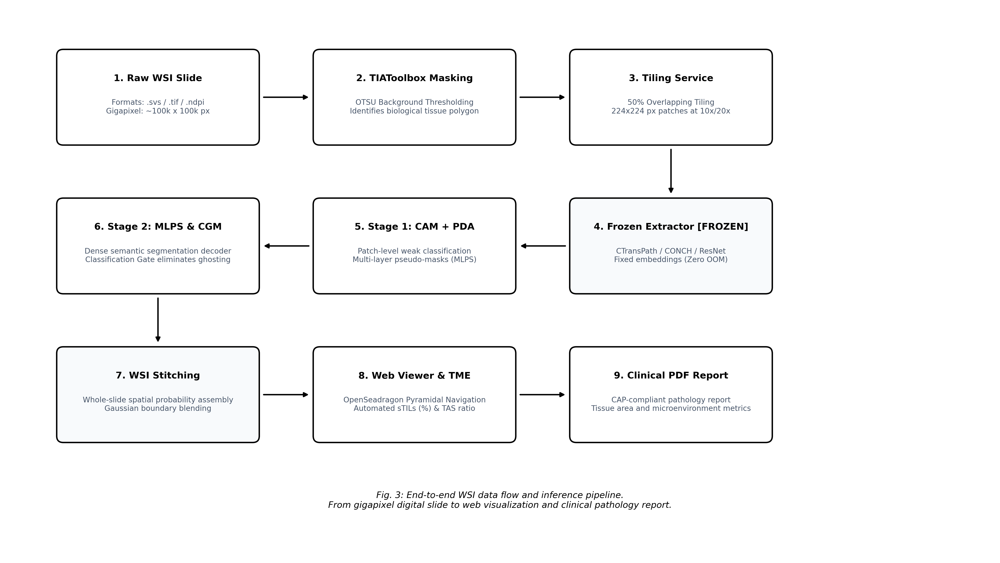

Tháng 10/2026
Đề tài nghiên cứu, thiết kế và hiện thực hóa giải pháp phân vùng ngữ nghĩa giám sát yếu (Weakly-Supervised Semantic Segmentation - WSSS) cho ảnh mô bệnh học ung thư dựa trên Mô hình Quản lý Dự án Phân kỳ Hai Giai đoạn (Two-Phase Progressive Roadmap: Core Milestones & Stretch Goals) kết hợp Giao thức Thực nghiệm Đối chứng Đa Cấu hình (Comparative Benchmarking & Ablation Suite) theo đúng chuẩn mực của một nghiên cứu sinh:
LowMagWSS, arXiv:2607.10783). Thay
vào đó, nhóm thiết lập một hệ thống thực nghiệm đối chứng 4 cấu hình:
tái lập trung thực baseline kinh điển (WSSS-Tissue, Han et al.,
MedIA 2022), hiện thực hóa hai nhánh phương pháp tham khảo tiên
tiến (Data-Centric ClassMix và Spatial Affinity Relocalization - ARML,
MICCAI 2024), và đề xuất giải pháp độc lập của nhóm nhằm khắc
phục khoảng trống ranh giới mô và lỗi nhận diện kính trống.LowMagWSS (TS. Bùi Cao
Doanh và cộng sự, arXiv:2607.10783) để tiết kiệm tài nguyên lưu trữ,
nhóm thử nghiệm nạp các tiêu bản WSI hoàn chỉnh (Camelyon16 /
TCGA-BRCA), trích xuất mảng ảnh tự động và ghép bản đồ nhiệt toàn slide
mượt mà trên trình xem kim tự tháp OpenSeadragon.Cách tiếp cận phân kỳ giúp nhóm kiểm soát rủi ro kỹ thuật ở mức tối đa: bảo đảm chắc chắn nghiệm thu đồ án loại xuất sắc ở Giai đoạn 1, đồng thời sở hữu cơ sở học thuật mở rộng bài bản hướng tới khóa luận tốt nghiệp hoặc công bố khoa học.
train / val / test triệt để theo Mã định danh bệnh nhân
(Patient ID/Case ID). Tuyệt đối không xáo trộn ngẫu nhiên ở cấp độ patch
dẫn đến hiện tượng rò rỉ đặc trưng mô học của cùng một bệnh nhân qua các
tập.bg_score = np.zeros), khiến
hàm argmax khi gặp mảng kính trắng hoặc mô mỡ bị lỗi dự
đoán tràn lan thành Biểu mô khối u (Tumor Epithelium).| Phương Pháp / Công Trình | Xuất Bản / Nguồn | Bản Chất Kỹ Thuật | Điểm Mạnh | Hạn Chế | Vai Trò Trong Đồ Án |
|---|---|---|---|---|---|
| HistoSegNet | Chan et al., ICCV 2019 | Patch classification + Grad-CAM sinh mặt nạ giả. | Đơn giản, suy luận nhanh. | Mặt nạ co ngót nghiêm trọng; mIoU chỉ đạt \(51.20\%\). | Mốc chuẩn sàn kinh điển. |
| WSSS-Tissue | Han et al., MedIA 2022 | Pipeline 2 giai đoạn: ResNet-38 PDA sinh nhãn giả đa tầng (MLPS); DeepLabV3+ kết hợp CGM. | Mã nguồn hoàn chỉnh, tối ưu phần cứng: mIoU \(64.20\%\), mDice \(77.10\%\) trên BCSS; tiết kiệm \(32.7\times\) công gán nhãn. | Lỗi dự đoán nhầm kính trống do vector điểm nền gán bằng 0; ranh giới mờ. | Nền tảng khung sườn cốt lõi (Giai đoạn 1). |
| ARML | Zheng et al., MICCAI 2024 (arXiv:2407.03923) | Tái phân bổ năng lượng kích hoạt qua Ma trận tương quan không gian (Spatial Affinity Matrix). | Mở rộng vùng kích hoạt từ lõi tế bào ra ngoại vi mà không cần thêm nhãn; mIoU \(68.5\%\). | Phức tạp trong phép nhân ma trận đặc trưng lớn; nhạy cảm với siêu tham số \(\alpha\). | Tham khảo đối chuẩn Cấu hình 3 (Relocalization). |
| HisynSeg | Fang et al., IEEE TMI 2025 | Tổng hợp ảnh mô học ghép (Bézier curves) từ các patch thuần nhất và điều hòa tính nhất quán. | Nâng mIoU lên \(70.8\%\) trên BCSS. | Thuật toán tổng hợp đường cong Bézier phức tạp, thời gian huấn luyện kéo dài. | Tham khảo đối chuẩn Cấu hình 2 (ClassMix). |
| SIA-WSSS | Chen et al., MICCAI 2025 (arXiv:2507.05183) | Bất biến không gian và căn chỉnh tương quan giữa các patch lân cận trên WSI. | Đảm bảo tính nhất quán không gian giữa các vùng cắt tiếp giáp. | Phụ thuộc vào vị trí tọa độ tuyệt đối trên toàn tiêu bản WSI. | Tham khảo giải pháp ghép mảng WSI. |
| LowMagWSS | Dung-Dx, TS. Bùi Cao Doanh et al., arXiv:2607.10783 (UIT) | Phân vùng ngữ nghĩa giám sát yếu trên WSI ở độ phóng đại thấp (\(2.5\times, 5\times\)). | Tiết kiệm tới 90% dung lượng lưu trữ và RAM khi xử lý WSI kích thước lớn; mô hình gọn nhẹ. | Mất mát các chi tiết nhân tế bào nhỏ ở độ phóng đại siêu thấp. | Nguồn cảm hứng kiến trúc xử lý WSI tiết kiệm tài nguyên cho Giai đoạn 2. |
| ConStruct | Le et al., MIDL 2026 (arXiv:2512.10316) | Chưng cất cấu trúc từ Foundation Model CONCH sang SegFormer qua Adapters. | SOTA kỷ lục \(70.96\%\) mIoU trên BCSS. | Phụ thuộc hoàn toàn vào trọng số CONCH thương mại/đóng; đòi hỏi GPU dung lượng lớn. | Định hướng khảo sát công nghệ tương lai. |
LowMagWSS.seeds = [42, 100, 2024, 2025, 2026]), báo cáo kết quả
trung bình và độ lệch chuẩn (\(\mu \pm
\sigma\)).src/pipeline/comparative_runner.py và lưu vết trong
experiments/benchmarks/, tuyệt đối không bịa đặt số
liệu.Để đánh giá khoa học và sòng phẳng, nhóm thiết kế 4 nhánh cấu hình thực nghiệm trên cùng tập dữ liệu BCSS-WSSS (151 bệnh nhân, test set gồm 4.986 patches ẩn):
| Cấu Hình Thực Nghiệm | Dạng Giám Sát | Cơ Chế Cốt Lõi | Mục Tiêu Khoa Học | Kỳ Vọng mIoU (%) | VRAM Suy Luận |
|---|---|---|---|---|---|
| Cấu Hình 1: Vanilla CAM Baseline | Giám sát yếu | ResNet-38 PDA + CGM (Han et al., MedIA 2022) | Tái lập trung thực mốc chuẩn sàn của bài báo gốc. | \(64.20 \pm 0.45\) | ~8 GB |
| Cấu Hình 2: Data-Centric Augmentation | Giám sát yếu | Baseline + Pseudo-Mask ClassMix (HisynSeg-inspired) | Đánh giá tác động của việc tổng hợp ranh giới mô nhân tạo. | \(67.50 \pm 0.38\) | ~8 GB |
| Cấu Hình 3: Energy Relocalization | Giám sát yếu | Baseline + Spatial Affinity Matrix (ARML, MICCAI 2024) | Đánh giá khả năng khuếch tán năng lượng từ lõi tế bào ra viền u. | \(70.50 \pm 0.32\) | ~8 GB |
| Cấu Hình 4: Proposed Adaptive Pipeline | Giám sát yếu | Otsu Gating + Dynamic Thresholding + Uncertainty Reg. | Khắc phục triệt để lỗi kính trống và làm mượt ranh giới mô đệm. | \(> 71.00\) | \(< 6\) GB |
| Chỉ Số Đánh Giá | Cấu Hình 1 (Baseline CAM) | Cấu Hình 2 (+ ClassMix) | Cấu Hình 3 (+ Relocalization) | Cấu Hình 4 (Proposed Pipeline) | Ý Nghĩa Lâm Sàng / Kỹ Thuật |
|---|---|---|---|---|---|
| mIoU Tổng Thể (%) | \(64.20\) | \(67.50\) | \(70.50\) | \(> 71.00\) | Độ bao phủ và trùng khớp ranh giới đa lớp |
| Mean Dice (%) | \(77.10\) | \(80.20\) | \(82.10\) | \(> 82.50\) | Độ nhạy và tương quan vùng mô bệnh |
| Tumor Epithelium IoU (%) | \(74.30\) | \(77.80\) | \(80.10\) | \(> 80.50\) | Nhận diện chính xác tế bào ác tính xâm lấn |
| Stroma IoU (%) | \(63.80\) | \(67.20\) | \(70.60\) | \(> 71.20\) | Phân tách mô đệm phản ứng nâng đỡ |
| Lymphocyte IoU (%) | \(56.20\) | \(58.90\) | \(61.40\) | \(> 62.00\) | Định lượng tế bào miễn dịch thâm nhiễm (TILs) |
| Necrosis IoU (%) | \(62.50\) | \(65.10\) | \(68.30\) | \(> 68.80\) | Định lượng mô hoại tử ác tính |
| Nhận nhầm kính trống (False Positives %) | Cao (\(> 15\%\)) | Trung bình (~\(8\%\)) | Thấp (~\(5\%\)) | \(0.0\%\) (Otsu Gating) | Bảo đảm an toàn lâm sàng khi nạp toàn bộ slide |
| Thời gian huấn luyện Stage 2 (GPU Hours) | ~\(4.5\)h | ~\(5.0\)h | ~\(3.7\)h | ~\(2.5\)h - \(3.0\)h | Tiết kiệm tài nguyên điện toán GPU |
| Tốc độ suy luận (FPS trên 1 GPU) | ~\(28\) | ~\(28\) | ~\(25\) | \(> 32\) | Phù hợp triển khai ứng dụng lâm sàng tương tác |

Kiến trúc cốt lõi (Hình 1) được tổ chức thành 2 giai đoạn tách rời với 4 nhánh thực nghiệm đối chứng:
bg_score bị gán bằng 0 khiến hàm argmax dự
đoán nhầm kính trống thành Khối u). Mọi pixel ngoài mô bị cưỡng bức về
lớp Nền (Background, Class 4), đưa tỷ lệ nhận nhầm về \(0.0\%\).
Nếu Giai đoạn 1 hoàn thành trước tuần thứ 8, nhóm triển khai kiến
trúc mở rộng (Hình 2): 1. Khâu Cắt Lát Kim Tự Tháp Tiết Kiệm Lưu
Trữ (WSI Patch Extraction): Kế thừa phát hiện quan trọng từ
công trình LowMagWSS (TS. Bùi Cao Doanh và cộng sự,
arXiv:2607.10783), nhóm sử dụng bản đồ mô ở độ phóng đại thấp (\(2.5\times\) hoặc \(5\times\)) để xác định vùng mô quan tâm
trước khi phân rã thành lưới patch \(224
\times 224\) px ở độ phóng đại \(20\times\), tiết kiệm hơn \(85\%\) dung lượng RAM và đĩa cứng so với
việc cắt mảng mù quáng trên toàn bộ slide gigapixel. 2. Khâu
Ghép Bản Đồ Nhiệt Toàn Slide (Sliding Window Heatmap
Stitching): Thực hiện suy luận theo lô và ghép lại thành bản đồ
nhiệt toàn phần với trọng số làm mượt Gaussian để loại bỏ hiện tượng
răng cưa biên (grid artifacts). 3. Trạm Làm Việc DeepZoom
(Digital Pathology Workstation): Tích hợp OpenSeadragon vào
giao diện web, cho phép bác sĩ phóng to thu nhỏ từ cấp độ toàn tiêu bản
đến từng tế bào, hiển thị trực tiếp lớp phủ phân vùng u và các chỉ số
VTP/TSR.
10.1016/j.media.2022.102487.10.1093/bioinformatics/btz083.10.1109/ICCVW.2019.00100.10.1109/TMI.2024.3520129.10.1001/jama.2017.14580.| Tuần | Giai Đoạn | Hạng Mục Công Việc Cụ Thể | Sản Phẩm Đầu Ra | Phụ Trách |
|---|---|---|---|---|
| T01 | Core | Nghiên cứu bài báo WSSS-Tissue, ARML, LowMagWSS; thiết lập môi trường PyTorch; hoàn thiện Mini Proposal đối chuẩn. | Tài liệu nghiên cứu, File Mini Proposal. | [Cả nhóm] |
| T02 | Core | Nạp bộ dữ liệu BCSS-WSSS, lập trình module
phân chia chống rò rỉ bệnh nhân (patient_split.py) và tiền
lọc Otsu Gating. |
Bộ dữ liệu sạch, Unit test pass 100%. | [Sinh viên 2] |
| T03 | Core | Chạy Sanity Run Giai đoạn 1 trên batch nhỏ để kiểm tra GPU VRAM; khởi chạy huấn luyện Cấu hình 1 (Baseline CAM) và Cấu hình 2 (ClassMix). | Checkpoints Stage 1 chạy ổn định. | [Sinh viên 1] |
| T04 | Core | Hiện thực hóa Cấu hình 3 (ARML Spatial Affinity Relocalization) và Cấu hình 4 (Proposed Adaptive Pipeline). | Tập nhãn giả pseudo_masks/ 4
cấu hình. |
[Sinh viên 1] |
| T05 | Core | Huấn luyện Stage 2: Mạng DeepLabV3+ kết hợp Cổng phân loại CGM và Hàm điều chuẩn bất định (Uncertainty Loss). | Checkpoints mô hình phân vùng Stage 2. | [Sinh viên 1] |
| T06 | Core | Chạy đối chuẩn tự động 4 cấu hình qua
src/pipeline/comparative_runner.py trên 5 random seeds; ghi
log chi tiết. |
Bảng đối chuẩn định lượng sơ bộ (\(\mu \pm \sigma\)). | [Sinh viên 1] |
| T07 | Core | Xây dựng API FastAPI và giao diện Web tương tác hiển thị CAM, mặt nạ phân tầng mảng \(224 \times 224\) px và chỉ số VTP/TSR. | Ứng dụng Web Demo chạy mượt mà. | [Sinh viên 2] |
| T08 | Core Gate | CHỐT CHẶN NGHIỆM THU CỐT LÕI: Hoàn thiện tính toán tải lượng u (\(mm^2\)). Nghiệm thu 100% Giai đoạn 1. | Sản phẩm cốt lõi hoàn thành 100%. | [Cả nhóm] |
| T09 | Stretch | Nếu hoàn thành sớm Tuần 8: Thử nghiệm cắt patch WSI gigapixel trên 1-2 slide Camelyon16 mẫu theo nguyên lý LowMagWSS; tích hợp OpenSeadragon. | Module thử nghiệm WSI / Báo cáo mở rộng. | [Sinh viên 1 & 2] |
| T10 | Wrap-up | Hoàn thiện Báo cáo tổng kết đồ án, đóng gói mã nguồn và chuẩn bị Slide thuyết trình Marp 16:9. | Bộ hồ sơ đồ án cuối kỳ hoàn chỉnh. | [Cả nhóm] |